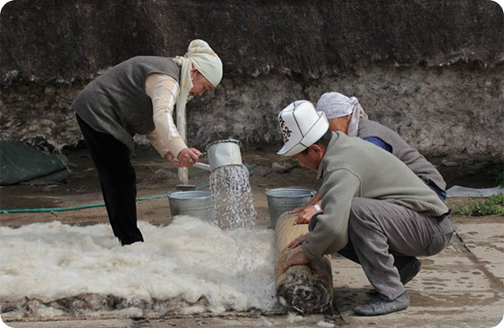
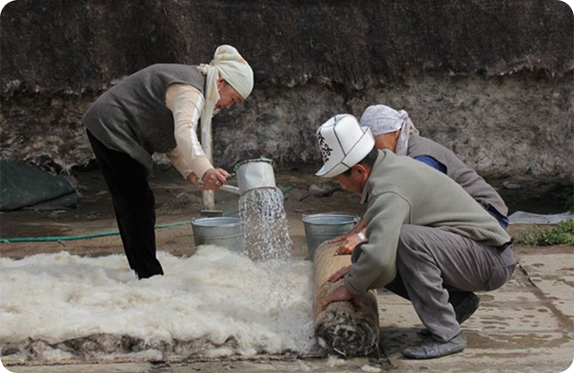
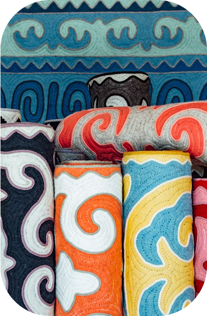
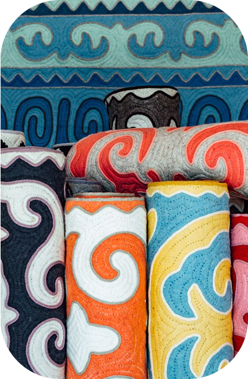

Шырдак
Шырдак — душа кыргызской
культуры в каждом доме.
Шырдак — традиционный кыргызский войлочный ковер, изготавливаемый из натуральной овечьей шерсти. Его название происходит от слова «шырык», что означает «стегание», один из ключевых процессов, придающих ковру прочность и долговечность.
История шырдака уходит корнями в древность, когда кыргызы начали использовать войлок для создания ковров и других предметов обихода. Эволюция и совершенствование кыргызского коврового искусства были обусловлены условиями жизни, климатом и природной средой.
Процесс изготовления шырдака — это искусство, которое вобрало в себя вековые традиции и знания кыргызского народа. Всё начинается с тщательного сбора шерсти, обычно с овец, чья шерсть отличается плотностью и долговечностью, что особенно важно для создания качественного ковра. Важно, чтобы шерсть была чистой и мягкой, поэтому её моют в тёплой воде с мылом, затем сушат на воздухе, тщательно очищая от всех загрязнений.
После высыхания шерсть проходит через этап трепки. В этом процессе волокна становятся более мягкими, лёгкими и податливыми для валяния. Применяя специальные техники, шерсть разделяется на тонкие и однородные волокна, что создаёт основу для дальнейшего формирования войлока.
 

Следующий ключевой этап — валяние. В горячей воде с мылом шерсть интенсивно растирается, используя циновку из камыша (чий). Этот процесс помогает волокнам переплетаться и образовывать плотный слой войлока — кийиз. После этого, на основе этого войлока, начинают создавать узоры, вырезая из цветных кусочков шерсти детали, которые затем укладываются и сшиваются. Эти куски, точно и аккуратно соединённые, образуют традиционные орнаменты, которые придают шырдаку его уникальный и узнаваемый вид.
Когда основное изделие готово, приступают к заключительной обработке. Края шырдака отделываются дополнительными декоративными элементами, как правило, в черно-белых тонах, что символизирует снежные вершины кыргызских гор. Это придаёт ковер завершённый, гармоничный вид. После завершения всех этапов изделие оставляют для окончательной сушки, а затем проверяют на прочность и долговечность.
.svg)
Шырдак должен быть не только красивым, но и прочным, устойчивым к нагрузкам и долговечным, сохраняя свои качества на протяжении многих лет.
В 2012 году традиционное искусство изготовления войлочных ковров шырдак и ала-кийиз было внесено в Список нематериального культурного наследия ЮНЕСКО, что подчеркивает его значимость и уникальность.
 
